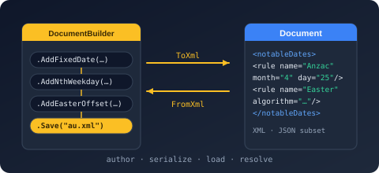

Bodu.Globalization.Calendar.Builder Namespace
- Package

Bodu.Globalization.Calendar.Builder
Purpose
Bodu.Globalization.Calendar.Builder is a fluent, chainable C# API for authoring Bodu.Globalization.Calendar notable-date documents. It is the in-code peer of hand-writing the XML or JSON: the same document model, assembled through a nested builder hierarchy, then serialized to a schema-valid form, saved to a file, or materialized straight into a NotableDateResource.
Reach for it when rule sets are produced programmatically - exporting curated data packs, composing documents in tests, or transforming an external holiday source into the notable-date schema - rather than editing XML by hand.
Static documentation
- Authoring with the notable-date builder - the end-to-end fluent walkthrough.
- Builder round-trip guarantees - the precise
FromXml/ToXml,FromJson/ToJson, andSave/Loadcontract, including the XML → JSON lossiness boundary. - Authoring notable date rules - the equivalent XML / JSON authoring path and the document model it produces.
Key types
- NotableDateDocumentBuilder - the entry point, created via
NotableDateDocumentBuilder.Create(resourceId). Accumulates metadata, a resolution policy, adjustment policies, imports, notable-date definitions, and overrides, then emits the document as XML (ToXml()/ToXDocument()), JSON (ToJson()/ToJsonObject()), a built NotableDateResource (Build()), or an INotableDateResourceProvider (ToProvider()). It also offersSave(path)/Load(path), the staticFromXml/FromJsonparsers for round-trip editing, andClone(). - NotableDateDefinitionBuilder - one
<NotableDate>concept (display name, category, default duration / non-working, tags, rules), obtained fromAddNotableDate(id, displayName, category, configure). - NotableDateRuleBuilder - one
<Rule>(priority, category, applicability, tags, adjustment references) carrying exactly one occurrence source - a single-date strategy (Fixed,DayOfWeekInMonth,WeekdayNearDate,RelativeWeekdayInMonth,OrdinalDayOfMonth,DayOfYear,IsoWeekDate,OffsetFromRule,WeekdayNearRule,NthWeekdayFromRule,WorkingDayOffsetFromRule,WorkingDayInMonth,Algorithm) or a recurrence source (DailyInterval,Weekly,MonthlyDay,MonthlyWeekday); obtained fromAddRule(id, configure). Selecting a second strategy throws. - AdjustmentPolicyBuilder and AdjustmentScopeBuilder - a reusable
<AdjustmentPolicy>(scope, trigger, action, emission, handler parameters), added withAddAdjustmentPolicy(id, configure)and referenced from a rule by id. - ResolutionPolicyBuilder - the resource-level
<ResolutionPolicy>(duplicate / collision / priority / observed-date policy and the working week). - ImportBuilder and ImportUseBuilder -
<Imports>that pull concepts from the bundled common catalogues, optionally re-scoping them. - OverrideBuilder - ID-targeted
<Overrides>(AddRule/PatchRule/RemoveRule). - NotableDateDocumentFormat - selects XML or JSON for the explicit
Save(path, format)overload.
Minimal sample
using Bodu.Globalization.Calendar;
using Bodu.Globalization.Calendar.Builder;
using Bodu.Globalization.Calendar.RangeResolution; // EmissionMode
NotableDateResource resource = NotableDateDocumentBuilder.Create("contoso.holidays")
.AddAdjustmentPolicy("weekend-to-monday", a => a
.When(AdjustmentTrigger.IfWeekend)
.Then(AdjustmentAction.MoveToNextWorkingDay)
.Emit(EmissionMode.ObservedOnly))
.AddNotableDate("new-years-day", "New Year's Day", NotableDateCategory.PublicHoliday, d => d
.AsNonWorkingByDefault()
.AddRule("default", r => r
.ForTerritory("US")
.Fixed(1, 1)
.WithAdjustment("weekend-to-monday")))
.AddNotableDate("thanksgiving", "Thanksgiving Day", NotableDateCategory.PublicHoliday, d => d
.AsNonWorkingByDefault()
.AddRule("default", r => r
.ForTerritory("US")
.DayOfWeekInMonth(11, DayOfWeek.Thursday, WeekOrdinal.Fourth)))
.Build();
// Or serialize / persist the authored document:
string xml = NotableDateDocumentBuilder.Create("contoso.holidays") /* … */ .ToXml();
NotableDateDocumentBuilder.Create("contoso.holidays") /* … */ .Save("holidays.json");
Notes
- XML is full-fidelity; JSON is the documented subset.
ToXml()emits the entire schema;ToJson()emits the narrower JSON form and throws NotSupportedException for features the JSON schema cannot model (imports, non-Gregorian calendars, XML-only trigger/action values, handler parameters, scope year-bounds). Build()defers to the canonical loader. It serializes to XML and loads through NotableDateResourceLoader, so a built resource is identical to one loaded from the equivalent file - and the same validation applies (a malformed document throws NotableDateValidationException). Pass an import resolver (e.g.CommonNotableDateResources.Resolver) toBuild(resolver)when the document imports catalogues.- Single strategy per rule. Each
<Rule>commits to exactly one strategy; a second strategy call throws InvalidOperationException. - Target frameworks.
net8.0andnet10.0.
Classes
- AdjustmentPolicyBuilder
Provides a fluent surface for authoring a reusable adjustment policy: its scope, the trigger that activates it, the action it performs, the emission mode of the resulting occurrence, and any custom handler parameters.
- AdjustmentScopeBuilder
Provides a fluent surface for narrowing the scope of an adjustment policy by territory, calendar, category, concept, rule, and year, restricting the occurrences the policy may transform.
- ImportBuilder
Provides a fluent surface for configuring an import of an external resource, optionally selecting and re-scoping individual concepts through one or more
Usedirectives.
- ImportUseBuilder
Provides a fluent surface for configuring a single imported concept, supplying a local alias, territory scope, category, non-working flag, and the adjustment policies applied to the imported concept.
- NotableDateDefinitionBuilder
Provides a fluent surface for authoring a notable-date concept: its identity, default category, duration and non-working flags, concept-level tags, and one or more calculation rules.
- NotableDateDocumentBuilder
Provides a fluent, chainable API for authoring a Bodu notable-date document on the notable-date schema, with full-fidelity XML serialization, a JSON-subset surface, and materialization into a NotableDateResource through the canonical loader.
- NotableDateRuleBuilder
Provides a fluent surface for authoring a single rule: its selection scalars, applicability scope, exactly one calculation strategy, rule-specific tags, and the adjustment policies applied to its occurrences.
- OverrideBuilder
Provides a fluent surface for authoring identifier-targeted override operations that add, patch, or remove rules after the base concepts and imports are assembled.
- ResolutionPolicyBuilder
Provides a fluent surface for configuring the document-level
ResolutionPolicy, which controls duplicate handling, same-day and span collisions, priority direction, observed-date range inclusion, and the working week.
Enums
- NotableDateDocumentFormat
Identifies the on-disk serialization form of a notable-date document produced by a NotableDateDocumentBuilder.